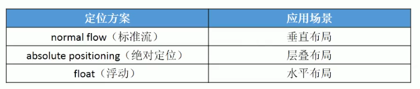

css-float属性
css的浮动属性也是对html元素进行页面布局的一种方法
它可以解决行内元素之间的空格间隙问题，
值：none;默认值即不浮动。
left;左浮动
right;右浮动
规则：
1.设置浮动后元素立即脱离文档流，且本身向页面的左上角(左浮动时)或右上角(右浮动时)移动，直到遇到父元素的边框或者其它浮动元素的边界。定位元素会层叠浮动元素。
2.浮动元素不能层叠行内级内容(行内级元素，inline-block元素，块级元素的文字内容)，而是被往后挤。文字就会自动环绕浮动元素的周围。块级元素就会被层叠
3.行内级元素，inline-block元素设置浮动后，其顶部将和在没设置浮动前所在行的顶部对齐。
4.设置浮动元素的上面是一个没浮动的块级元素，则浮动元素不会超过它。
float属性会引起的问题1/h4>
在使用浮动布局时，水平方向设置margin-right时最后一个都是多余的。 解决方法：1.给最后一个设置一个统一类， 2.使用伪类选择器 3.给它们再包一层div并设置负值的margin-right。 对于border边框重叠也是可以设置margin-right负值解决。
float属性会引起的问题2
父元素高度塌陷问题：即在文档流中父元素不设置高度时，默认是由子元素撑开的，而子元素设置浮动后会脱离文档流，父元素也就没了撑开的东西了。 这时就需要清除浮动造成的影响。 使用clear属性： none;默认值不清楚浮动。 left;让元素的顶部低于之前所有左浮动元素的底部，即在之前左浮动元素的下面。 right;让元素的顶部低于之前所有右浮动元素的底部，即在之前右浮动元素的下面。 both;让元素的顶部低于之前所有浮动元素的底部，即在之前浮动元素的下面。 方法一：在父元素最后添加一个空白div然后对其清除浮动可以解决父元素高度塌陷问题，但是会在页面中添加多余的结构。 通过选中父元素的后面伪元素,原理和上面的一样但是这个是css的方法，页面上不添加额外的结构。 父元素::after{ content:""; display:block; clear:both; } 方法二：设置父元素的overflow属性为auto/hidden，开启父元素的BFC属性。 补充：在w3c中每个元素都有一个隐含属性BFC(block formatting context)，默认是关闭的。但是当它开启时，元素的垂直外边距不会和子元素的重叠，不会被浮动元素覆盖，可以包含浮动的子元素。 如何开启BFC： 1.设置元素浮动，本身就是它引起的不能解决高度塌陷问题。 2.设置元素绝对定位也不能解决。 3.设置元素为inline-block，不推荐。 4.设置元素overflow:auto/hidden; 总结：父元素高度塌陷是因为子元素浮动后脱离文档流不再向父元素报告宽高。父元素没有内容撑开了。解决方法其实就两种 父元素设置overflow属性为auto/hidden,开启父元素的BFC属性。 父元素设置clear:both;清除浮动。法一在父元素后面添加一个空白div w3c推荐。法二利用父元素的:after伪类，实际开发推荐。
position，float使用场景
